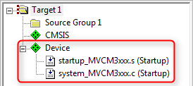
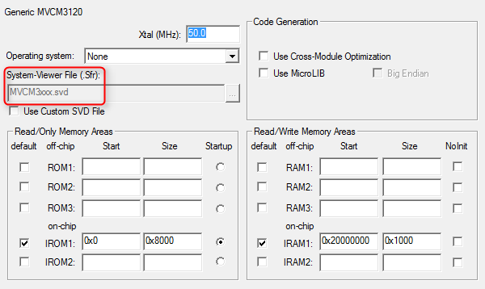
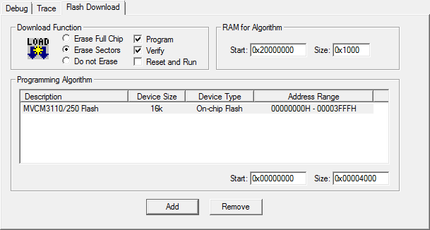

A Software Pack that contains a <devices> element is called Device Family Pack (DFP). A DFP may contain additional Software Components or Example Projects or any combination of those. The typical content of a DFP is:
This section explains how to create a DFP. Initially, the PDSC file in the DFP only describes devices. This DFP is then extended to contain also SVD files, Flash algorithms, and device related software components such as system and HAL files. Example projects and code templates may be added as described in the section Pack with Software Components.
DFP Use Cases
A Device Family Pack (DFP) may be provided by a Silicon Vendor and is used to extend development tools with support for new devices. In general, the DFP enables Silicon Vendors to distribute tool independent device support for their device families.
DFPs can also be used to provide information for the display on web sites. One example is the new device database on www.keil.com/dd2/:

Device information on a web site extracted from a DFP
Steps to Create a DFP
Basic Device Family Pack
In the following sections, a DFP will be created for a fictional device family called MVCM3 from the device vendor MyVendor. The device family consists of four member that are separated into two sub-families. The specification of the MVCM3 family is as follows:

MVCM3 Device Family Specification
Preparations
- Create a working directory on you PC, for example C:\temp\working_dfp.
- Go to the directory \CMSIS\Pack\Tutorials available in the ARM::CMSIS Pack installation. Please consult your development tool's documentation for more information on the Pack installation directory structure. In a standard µVision installation, you will find it below C:\Keil_v5\ARM\Pack\ARM\CMSIS\version.
- Open the file Pack_with_Device_Support.zip.
- Copy the content of the ZIP file's 01_Basic_Pack directory into your working directory.
- Make sure that files/directories are not write protected (remove read-only flag).
- Copy from the directory \CMSIS\Utilities available in the ARM::CMSIS Pack installation the following files into your working directory:
- packChk.exe
- PACK.xsd
- SVDConv.exe
- Open the MyVendor.MVCM3.pdsc file in an editor.
Code Example
-
Add a <devices> section in the PDSC file with the following:
<devices>
<family Dfamily="MVCM3 Series" Dvendor="Generic:5">
<processor Dcore="Cortex-M3" DcoreVersion="r2p1" Dfpu="0" Dmpu="0" Dendian="Little-endian"/>
<description>
The MVCM3 device family contains an ARM Cortex-M3 processor, running up to 100 MHz with a versatile set of on-chip peripherals.
</description>
<!-- ************************ Sub-family 'MVCM3100' **************************** -->
<subFamily DsubFamily="MVCM3100">
<processor Dclock="50000000"/>
<!-- ************************* Device 'MVCM3110' ***************************** -->
<device Dname="MVCM3110">
<memory name="IROM1" access="rx" start="0x00000000" size="0x4000" startup="1" default="1"/>
<memory name="IRAM1" access="rw" start="0x20000000" size="0x0800" init ="0" default="1"/>
</device>
<!-- ************************* Device 'MVCM3120' ***************************** -->
<device Dname="MVCM3120">
<memory name="IROM1" access="rx" start="0x00000000" size="0x8000" startup="1" default="1"/>
<memory name="IRAM1" access="rx" start="0x20000000" size="0x1000" init ="0" default="1"/>
</device>
</subFamily>
<!-- ************************ Sub Family 'MVCM3200' **************************** -->
<subFamily DsubFamily="MVCM3200">
<processor Dclock="100000000"/>
<!-- ************************* Device 'MVCM3250' ***************************** -->
<device Dname="MVCM3250">
<memory name="IROM1" access="rx" start="0x00000000" size="0x4000" startup="1" default="1"/>
<memory name="IRAM1" access="rw" start="0x20000000" size="0x0800" init ="0" default="1"/>
</device>
<!-- ************************* Device 'MVCM3260' ***************************** -->
<device Dname="MVCM3260">
<memory name="IROM1" access="rx" start="0x00000000" size="0x8000" startup="1" default="1"/>
<memory name="IRAM1" access="rw" start="0x20000000" size="0x1000" init ="0" default="1"/>
</device>
</subFamily>
</family>
</devices>
- Note
Dvendor IDs are not freely selectable. The current set of IDs can be found in the PACK.xsd file (available in the ARM::CMSIS Pack in the CMSIS\Pack\Utilities directory).- All code examples in this and the following sections can be found in the
snippets.xml file in the 01_Basic_Pack directory.
-
Save the PDSC file and generate the Pack file using the gen_pack.bat script. See Generate a Pack for further details. Afterwards, install the Pack in your development tool.

Display of microcontroller devices in development tools
- Note
- packChk.exe will display M350 informations:
*** INFO M350:
No 'Startup' found for [Generic:5] 'MVCM3110' ()
We will address this problem in the next section.
System and Startup Files
CMSIS-Core (Cortex-M) defines the following files to be used by an embedded application:
startup_<device>.s with reset handler and exception vectors. It is executed after reset and calls SystemInit and may contain stack and heap configurations for the user application.system_<device>.c and system_<device>.h with general system configuration information (i.e. for clock and BUS setup).<device.h> gives access to processor core and all peripherals. This file should be generated out of the SVD file using SVDConv.exe to ensure consistency between the header file and what is being displayed by the debugger.

System and startup files in relation to user code
- Note
- CMSIS-Core (Cortex-M) explains the structure of the system and startup files and how to create them.
Copy the content of the 02_System_and_Startup directory of the Pack_with_Device_Support.zip file to the Files directory in your working environment:
-
Add a
<conditions> section in your PDSC with the following (the conditions section provides more information on this step): <condition id="MVCM3 CMSIS-Core">
<!-- conditions selecting Devices -->
<description>MyVendor MVCM3 Series devices and CMSIS-Core (Cortex-M)</description>
<require Cclass="CMSIS" Cgroup="Core"/>
<require Dvendor="Generic:5" Dname="MVCM3*"/>
</condition>
<condition id="Startup ARM">
<description>Startup assembler file for ARMCC</description>
<require Tcompiler="ARMCC"/>
</condition>
<condition id="Startup GCC">
<description>Startup assembler file for GCC</description>
<require Tcompiler="GCC"/>
</condition>
<condition id="Startup IAR">
<description>Startup assembler file for IAR</description>
<require Tcompiler="IAR"/>
</condition>
- Note
- The assembler based
startup_<device>.s file is tool dependent. Therefore, separate conditions for the various tool vendors are required.
-
Add a
<components> section in your PDSC with the following (the components section provides more information on this step): <component Cclass="Device" Cgroup="Startup" Cversion="1.0.0" condition="MVCM3 CMSIS-Core">
<description>System Startup for MyVendor MVCM3 Series</description>
<files>
<!-- include folder -->
<file category="include" name="Device/Include/"/>
<file category="source" name="Device/Source/ARM/startup_MVCM3xxx.s" attr="config" condition="Startup ARM" version="1.0.0"/>
<file category="source" name="Device/Source/GCC/startup_MVCM3xxx.S" attr="config" condition="Startup GCC" version="1.0.0"/>
<file category="source" name="Device/Source/IAR/startup_MVCM3xxx.s" attr="config" condition="Startup IAR" version="1.0.0"/>
<file category="source" name="Device/Source/system_MVCM3xxx.c" attr="config" version="1.0.0"/>
</files>
</component>
-
Add a new version number:
<release version="1.0.1">
Startup files included
</release>
-
Finally, save the PDSC file and regenerate the Pack file using the gen_pack.bat script. Afterwards, install the Pack in your development tool and create a new project. Select the software components ::CMSIS:CORE and ::Device:Startup for the project:

Startup and system files added to a project
- Note
- packChk.exe will display M350 informations:
*** INFO M353: .\Files\MyVendor.MVCM3.pdsc (Line 98)
No 'Device Headerfile' File found for Component 'Startup' (MyVendor::Device.Startup:1.0.0) for '[Generic:5] MVCM3110' (ARMCC)
We will address this problem in the next section.
System View Description File
CMSIS-SVD formalizes the description of the programmer's view for the system contained in ARM Cortex-M processor-based microcontrollers, in particular the memory mapped registers of the peripherals. The level of detail contained in system view descriptions is comparable to what is found in device reference manuals published by silicon vendors. The information ranges from a high level functional description of a peripheral all the way down to the definition and purpose of an individual bit field in a memory mapped register. CMSIS-SVD files are developed and maintained by the silicon vendors. The XML based SVD file is the input for SVDConv.exe that generates the tool dependent debug view and the device header file.

SVD file conversion flow
Copy the content of the 03_SVD_File directory of the Pack_with_Device_Support.zip file to the Files directory in your working environment:
-
Open the file MVCM3xxx.svd in the Files\SVD directory in an editor and change the following:
<device schemaVersion="1.1" xmlns:xs="http://www.w3.org/2001/XMLSchema-instance" xs:noNamespaceSchemaLocation="CMSIS-SVD.xsd" >
<vendor>MyVendor</vendor> <!-- device vendor name -->
<vendorID>Generic</vendorID> <!-- device vendor short name -->
<name>MVCM3xxx</name> <!-- name of part-->
<series>MVCM3xxx</series> <!-- device series the device belongs to -->
<version>1.2</version> <!-- version of this description, adding CMSIS-SVD 1.1 tags -->
<description>Arm 32-bit Cortex-M3 Microcontroller based device, CPU clock up to 100 MHz.</description>
-
Open a command window in your working directory and enter:
C:\temp\working_dfp>SVDConv.exe Files\SVD\MVCM3xxx.svd --generate=header –-fields=macro
-
You should see some output of SVDConv similar to this:
CMSIS-SVD SVD Consistency Checker / Header File Generator V2.86g
Copyright (C) 2010 - 2014 Arm Ltd and Arm Germany GmbH. All rights reserved.
Options: "Files\SVD\MVCM3xxx.svd" --generate=header --fields=macro
Reading file: "Files\SVD\MVCM3xxx.svd"
Decoding using XML SVD Schema V1.1
Found 0 Errors and 0 Warnings
Return Code: 0 (OK)
Move the generated header file MVCM3xxx.h to the Device\Include directory.
-
Add the following two lines at the family level in the PDSC file:
<compile header="Device/Include/MVCM3xxx.h"/>
<debug svd="SVD/MVCM3xxx.svd"/>
-
Add a new version number:
<release version="1.0.2">
SVD and header file included
</release>
-
Finally, save the PDSC file and regenerate the Pack file using the gen_pack.bat script. Afterwards, install the Pack in your development tool and create a new project. Depending on your development environment, you will be able to see the SVD file included in your project:

Project with SVD file
- Note
- For more information on CMSIS-SVD, please visit www.keil.com/cmsis/svd
Flash Programming Algorithms
Flash Programming are used to erase or download applications to Flash devices. A DFP usually contains predefined Flash algorithms for programming its supported devices. The page Algorithm Functions explains the mechanisms in more detail.
For the MVCM3 device family, two flash algorithms have to be created. MVCM3110/250 have 16 kB of Flash, whereas MVCM3120/260 have 32 kB of Flash memory.
Copy the content of the 04_Flash_Programming directory of the Pack_with_Device_Support.zip file to the working directory:
-
Rename the project file NewDevice.uvproj (in the _Template_Flash directory) to represent the new Flash ROM device name, for example MVCM3XXX_16.uvproj.
-
Open the project with uVision. The selected target (Cortex-M) is fine for the device.
- Note
- Creating a Flash programming algorithm with MDK-Lite is not supported.
-
Open the dialog Project - Options for Target - Output and change the content of the field Name of Executable to represent the device, here MCVM3XXX_16.

Options for Target 'Cortex-M'
-
In the real world, you would now start to adapt the programming algorithms in the file FlashPrg.c. For now, only change the device parameters (Device Name, Device Size, and Sector Size) in the FlashDev.c file:
struct FlashDevice const FlashDevice = {
FLASH_DRV_VERS,
"MVCM3110/250 Flash",
ONCHIP,
0x00000000,
0x00004000,
1024,
0,
0xFF,
100,
3000,
0x002000, 0x000000,
SECTOR_END
};
-
Use Project - Build Target to generate the new Flash programming algorithm. The algorithm will be created in the parent directory of the _Template_Flash directory.
-
Copy the output file ..\MVCM3XXX_16.FLM to a new subdirectory called Files\Flash. Add these lines to the MVCM3110/250 device sections:
algorithm name="Flash/MVCM3XXX_16.FLM" start="0x00000000" size="0x4000" default="1"/>
-
Create a MVCM3XXX_32.flm for the MVCM3120/260 devices.
-
Add these lines to the MVCM3120/260 device sections:
algorithm name="Flash/MVCM3XXX_32.FLM" start="0x00000000" size="0x8000" default="1"/>
-
Add a new version number:
<release version="1.0.3">
Flash Programming Algorithms added
</release>
-
Finally, save the PDSC file and regenerate the Pack file using the gen_pack.bat script. Afterwards, install the Pack in your development tool. Depending on your development environment, you will be able to see the Flash Programming Algorithms included in your project (either for a new project or by adding it manually to an existing project):

Display of Flash Programming Algorithm
- Note
- The page Flash Programming gives more information on the subject.
Debug Descriptions
Device Properties
To limit redundancy, devices can be organized in two hierarchy groups:
- family: the attributes of a device family which includes also the processor.
- subFamily: attributes of an optional sub-family; this adds or modifies features of a family.
Parameters of each single device are defined in:
- device: attributes of a specific silicon device
- variant: attributes of a device variant (for example, with different package or temperature range) or an OEM device or board that integrates the device.
A device is described by the following properties:
- description: textual device description
- feature: categorized list of device peripherals and features. This list is used on web sites for the display of device features.
- book: documentation about the device and its processor(s)
- processor: processor and processor features embedded in the device
- compile: device specific general settings for the build tools
- debugconfig: default settings for a debug connection
- debugport: debug port description of the device for the debugger to configure a debug connection.
- debug: device specific information for the debugger to configure a debug connection including System View Description files.
- trace: device specific information for the debugger to configure trace.
- memory: memory layout of the device for internal and external RAM and ROM regions
- algorithm: device specific Flash programming algorithms
A device inherits all specifications from both the family and sub-family levels. Some properties are required to be unique. For example, the name of the SVD file attribute of the <debug> property. Therefore, the SVD file specified on the family level can be redefined by the attribute on the sub-family or device level. Other information like the <description> and <feature> entries are adding up, starting with the information from the family and sub-family level and finalizing with the information on the device level.
The following shows how to specify the device properties for the MVCM3110 device (refer to the specification shown in Basic Device Family Pack). The other members of the family are specified accordingly.
Copy the content of the 05_Device_Properties directory of the Pack_with_Device_Support.zip file to the Files directory of your working environment:
-
The MVCM3 Series family properties processor, compile, description, and debug are already specified. There are additional common properties that can be specified on the family level: book and feature. Add the following lines to the PDSC file in the <family> section:
<book name="Docs/dui0552a_cortex_m3_dgug.pdf" title="Cortex-M3 Generic User Guide"/>
<book name="Docs/MVCM3XXX_Datasheet.pdf" title="MVCM3 Series Datasheet"/>
<book name="Docs/MVCM3XXX_Product_Brief.pdf" title="MVCM3 Product Brief"/>
<feature type="ExtInt" n="16"/>
<feature type="Temp" n="-40" m="105" name="Extended Temperature Range"/>
<feature type="VCC" n="2.5" m="3.6"/>
<feature type="RTC" n="32768"/>
<feature type="WDT" n="1"/>
-
The MVCM31xx sub-family has some features that are common for the two member devices. Please add the following code to the MVCM31100 <subFamily> section:
<feature type="IOs" n="26"/>
<feature type="I2C" n="1"/>
<feature type="UART" n="4"/>
<feature type="Timer" n="6" m="32"/>
<feature type="QFP" n="32"/>
-
The MVCM3110 device has some features that are unique to that device. Please add the following code to the MVCM3110 <device> section:
<feature type="PWM" n="2" m="16"/>
Device Specific Software Components
Finally, software components and example projects need to be added to the DFP.
-
Add the following lines to the PDSC file in the <components> section:
<component Cclass="Device" Cgroup="HAL" Csub="GPIO" Cversion="1.0.0" condition="MVCM3 CMSIS-Core">
<description>GPIO HAL for MyVendor MVCM3 Series</description>
<files>
<file category="header" name="Device/Include/GPIO.h"/>
<file category="source" name="Device/Source/GPIO.c"/>
</files>
</component>
<component Cclass="Device" Cgroup="HAL" Csub="ADC" Cversion="1.0.0" condition="MVCM3 CMSIS-Core">
<description>ADC HAL for MyVendor MVCM3 Series</description>
<files>
<file category="header" name="Device/Include/ADC.h"/>
<file category="source" name="Device/Source/ADC.c"/>
</files>
</component>
<component Cclass="CMSIS Driver" Cgroup="I2C" Cversion="1.0.0" condition="MVCM3 CMSIS-Core" maxInstances="3">
<description>I2C Driver for MVCM3 Series</description>
<RTE_Components_h>
#define RTE_Drivers_I2C0
#define RTE_Drivers_I2C1
#define RTE_Drivers_I2C2
</RTE_Components_h>
<files>
<file category="source" name="Drivers/I2C/I2C_MVCM3.c"/>
<file category="header" name="Drivers/I2C/I2C_MVCM3.h"/>
</files>
</component>
<component Cclass="CMSIS Driver" Cgroup="UART" Cversion="1.0.0" condition="MVCM3 CMSIS-Core" maxInstances="5">
<description>UART Driver for MVCM3 Series</description>
<RTE_Components_h>
#define RTE_Drivers_UART0
#define RTE_Drivers_UART1
#define RTE_Drivers_UART2
#define RTE_Drivers_UART3
#define RTE_Drivers_UART4
</RTE_Components_h>
<files>
<file category="source" name="Drivers/UART/UART_MVCM3.c"/>
<file category="header" name="Drivers/UART/UART_MVCM3.h"/>
</files>
</component>
- Note
- The first two software components are added to Device::HAL because they are specific to the device family and are not using a published API. The drivers for I2C and UART are adhering to the CMSIS-Driver specification. Thus, they are added to the Cclass CMSIS Driver.
-
An example project has also been created. Add an <examples> section with the following:
<examples>
<example name="Dummy" doc="Abstract.txt" folder="Examples/dummy">
<description>Dummy project</description>
<board name="MVCM3 Starter Kit" vendor="MyVendor"/>
<project>
<environment name="uv" load="dummy.uvprojx"/>
</project>
<attributes>
<category>Getting Started</category>
</attributes>
</example>
</examples>
-
Add a new version number:
<release version="1.0.4">
DFP finalized
</release>
-
Finally, save the PDSC file and regenerate the Pack file using the gen_pack.bat script. Afterwards, install the Pack in your development tool.